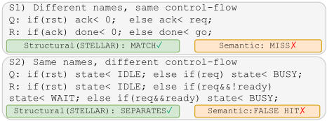
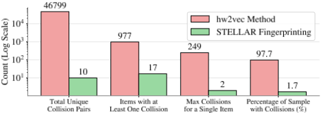
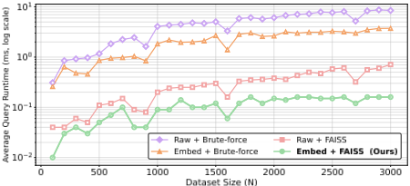
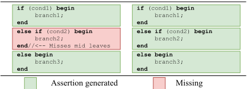
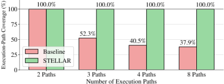
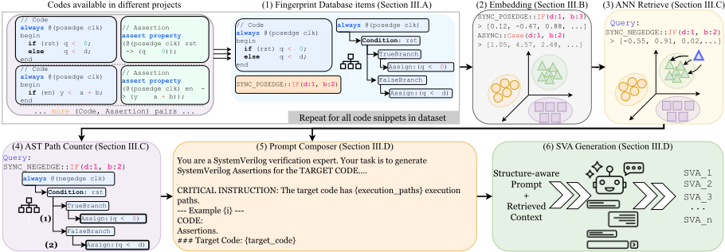

STELLAR：面向形式验证的结构引导 LLM 断言检索与生成
该论文针对形式验证（FV）中 SystemVerilog Assertions（SVA）手写耗时易错、而现有 LLM 方法从零生成且忽略硬件结构模式与专家断言库的问题，提出 STELLAR 框架。其核心是将 RTL 块表示为 AST 结构指纹（编码控制流、赋值类型并附敏感列表上下文前缀），用 all-MiniLM-L6-v2 与 FAISS 从专家 (RTL, SVA) 知识库中检索结构相似样例，并在提示中注入执行路径数的 CRITICAL INSTRUCTION 约束 LLM 生成断言。实验显示 GPT-4o mini 语法正确率从 84.9% 提升至 99.8%，执行路径覆盖最高达 100%，开源模型 BLEU 提升 2.5 倍以上。在 UART、I2C、SHA-3 案例中经 Cadence Jasper 验证，formally proven SVA 数量与 formal coverage 均显著优于 zero-shot 基线。该工作直接命中团队 2.5/2.7 能力域，可借鉴于构建团队自有断言资产库与断言生成自动化。
FV 的有效性高度依赖高质量 SVA，但手写断言耗时、易错且难扩展，需要把含糊的自然语言 SPEC 与 RTL 底层实现细节在工程师脑中综合。现有 LLM 断言生成方法（如 SANGAM、AssertionForge）从零生成，仅分析当前设计的 SPEC 与 RTL，未利用工业 FV 环境中最有价值的资产——历史项目中专家手写的 RTL 与 SVA 代码库，导致重复劳动、已解决 bug 复现以及 SVA 风格不一致；同时基于语义相似度的 RAG 检索会因信号命名任意性而检索到结构无关的样例。
STELLAR 采用四阶段流水线：(i) 结构指纹：用 PyVerilog 做 AST 解析，生成编码控制流模式（if-else 嵌套、深度、分支数）、赋值类型（blocking vs. non-blocking）与数据流的层级字符串，并按 always 块敏感列表打上 ASYNC::/SYNC_POSEDGE:: 等上下文前缀，将 HW2VEC 类嵌入的碰撞率从 97.7% 降至 1.7%；(ii) 检索：指纹经 all-MiniLM-L6-v2 Sentence Transformer 转为稠密向量，用 FAISS 做 ANN 近似最近邻搜索以获得可扩展的检索速度；(iii) 结构引导提示：动态遍历 AST 统计唯一执行路径数，将路径数作为 CRITICAL INSTRUCTION 注入提示，强制 LLM 为每条路径生成断言；(iv) SVA 生成：将 top-K（3 或 5）结构相似 (RTL, SVA) 样例与目标 RTL 组合进提示（temperature=0，1024-token 限制）。整体分离线建库（VERT 数据集经语法检查、剔除失败项、格式归一化后按 2:1 划分为约 1 万条知识库与 5 千条查询集）与在线生成两阶段。
结构指纹碰撞率从 HW2VEC 嵌入的 97.7% 降至 1.7%
在 30% 变量重命名下，基于语义嵌入的基线 Recall@10 从 1.0 降至 0.2，而 STELLAR 因指纹对变量名不变而保持稳定
GPT-4o mini 在 K=5 检索样例下语法正确率由 84.9%（zero-shot）提升至 99.8%
开源模型 BLEU 分数提升超过 2.5 倍，GPT-4o mini 的 BERTScore 提升至 0.957
zero-shot 基线执行路径覆盖最低仅 29%；STELLAR 使 GPT-4o mini 达到 100% 路径覆盖，并将 Llama-3.1 从 29.5% 提升至 93.0%
CodeLlama-7b 结合 STELLAR 后语法正确率达到与 zero-shot GPT-4o mini 相当的水平
UART 案例：语法通过率提升至 89.7%，formally proven SVA 数量为基线 3 倍，formal coverage 提升约 20%
I2C master 案例：生成 125 条 SVA，语法通过率 95.2%，COI formal coverage 超基线 2 倍以上
SHA-3 (Keccak) 案例：生成 44 条 SVA、语法通过率 90.9%（基线 58 条、67.2%），COI/statement/toggle 覆盖显著更高
首个以结构相似度（AST 指纹）引导 LLM SVA 生成的框架。区别于 ChIRAAG、AssertLLM、SANGAM、AssertionForge 等'从零生成'或仅用语义相似度检索的方法，STELLAR 显式复用专家 (RTL, SVA) 历史代码库：用确定性 AST 签名替代 GNN 粗粒度嵌入（避免向量坍缩碰撞），用敏感列表上下文前缀区分组合/时序逻辑，用 FAISS 保证检索可扩展，并用执行路径计数提示解决 LLM 漏掉中间分支的路径覆盖问题；新设计无需重训即可入库，已验证断言可回流扩充知识库。
相关度级别：high
命中能力域：2.5 形式验证与等效性检查 | 2.7 EDA/验证自动化与 AI 辅助 | 2.4 设计验证方法学
理由：论文直接命中 2.5 形式验证（SVA 生成、formal coverage、Cadence Jasper 流程）与 2.7 验证自动化与 AI 辅助（LLM+RAG 断言生成、可复用验证资产、FAISS 检索基础设施），并涉及 2.4 验证方法学（ABV、路径/分支覆盖）。团队交付 LPDDR/HBM4/UCIe 等存储与互连 IP 时大量依赖专家手写 SVA 与 formal 验证，论文'复用专家 (RTL, SVA) 代码库 + 结构感知检索'的核心假设与团队多年积累的 IP 断言资产高度契合，可直接启发内部断言生成自动化、断言复用知识库建设与 LLM 辅助验证流程。
建议动作：深入精读并做内部分享
arXiv:2601.19903v3 [cs.AR] 19 Mar 2026
即将发表于第63届设计自动化会议（DAC '26），2026年7月26日至29日，加利福尼亚州长滩
{srajabi,chengmo,satwik}@udel.edu
特拉华大学电气与计算机工程系，美国特拉华州纽瓦克

以及寄存器传输级（RTL）代码中的底层实现细节。验证工程师必须在头脑中综合来自这两方面的信息，才能创建出高质量的断言，而这一过程很难实现自动化。
尽管大语言模型（LLMs）在代码生成方面已具备相当能力，但最近的一项研究表明，仅靠商用 LLM 尚不足以完全胜任断言生成任务，因为它们常常产生语法或语义错误 [20]。其他近期工作则表明，基于 LLM 的断言自动生成存在潜在的改进空间。例如，SANGAM [8] 在多模态规格说明与 RTL 之上进行迭代推理，而 AssertionForge [3] 则从 SPEC 和 RTL 构建结构化知识，以综合出全面的设计信息。尽管取得了这些进展，这两项工作都存在一个共同的关键局限：它们试图仅通过分析底层设计文件（SPEC 和 RTL）来从零开始创建断言，而未能从工业代码库中已有的专家编写断言中获益学习。例如，AssertionForge 提供给 LLM 的上下文十分有限，仅涉及其从当前设计的 SPEC 和 RTL 中提取的信息，包括代码片段以及基于信号名匹配得到的信息。这种“从零发明”的方法忽视了工业形式验证（FV）环境中最宝贵的资产，即来自过去/现有项目的、由专家编写的 RTL 与 SystemVerilog 断言（SVA）配对代码库。未能利用这些经过验证的示例会导致多种局限，包括精力的浪费、先前已解决缺陷的再次引入，以及无法贯彻专家编写代码库中所采用的一致且符合行业标准的 SVA 风格。
为弥合这一差距，本文提出了 STELLAR（Structure-guided LLM Assertion Retrieval and Generation for Formal Verification），这是首个建立在如下假设之上的框架：就 SVA 生成而言，结构相似度是比语义相似度更有效的检索度量。由于断言本质上与设计的结构模式紧密相关，忽视这一方面的检索方法便会错失一个可用于引导 LLM 的强大信号。如图 1 所示，该图表明结构感知检索能够正确
形式验证（Formal Verification, FV）依赖于高质量的 SystemVerilog 断言（SystemVerilog Assertions, SVA），但人工编写过程缓慢且容易出错。现有的基于大语言模型（LLM）的方法要么从零开始生成断言，要么忽略了硬件设计以及专家编写断言中的结构模式。本文提出 STELLAR，这是首个利用结构相似度引导基于 LLM 的 SVA 生成的框架。STELLAR 将 RTL 代码块表示为抽象语法树（AST）结构指纹，从知识库中检索结构相关的（RTL, SVA）对，并将其整合到结构引导的提示词中。实验表明，STELLAR 在语法正确性、风格一致性和功能正确性方面均表现更优，凸显了结构感知检索是工业 FV 领域一个有前景的发展方向。
SystemVerilog 断言（SVA）、大语言模型（LLM）、形式验证
Saeid Rajabi、Chengmo Yang 和 Satwik Patnaik。2026年。STELLAR：面向形式验证的结构引导LLM断言检索与生成（STELLAR: Structure-Guided LLM Assertion Retrieval and Generation for Formal Verification）。收录于设计自动化会议（DAC '26）论文集。ACM，美国纽约州纽约市，共7页。https://doi.org/10.1145/nnnnnnn.nnnnnnn
生成高质量断言所需的人工投入与专业知识推动了自动化 SystemVerilog 断言（SVA）生成的研究 [9, 10, 14, 19]。诸如 GOLDMINE [24]、A-Team [4] 和 HARM [6] 等非大语言模型（LLM）方法依赖于数据挖掘、模板和/或静态分析。尽管这些方法在某些领域行之有效，但由于静态分析的算法复杂度 [20] 以及状态爆炸问题，它们往往难以扩展到大型工业设计，这限制了它们在大型设计上的能力 [25]。
基于 LLM 的方法近来获得了大量研究关注 [2, 15, 18, 22]。ChIRAAG [16] 利用 GPT-4 并通过迭代细化，从自然语言 SPEC 自动生成断言。类似地，AssertLLM [27] 使用多个专用 LLM 从 SPEC 中提取信息并生成 SVA，而寄存器传输级（RTL）仅用于验证。SANGAM [8] 使用包括图表在内的多模态 SPEC 文件，并借助蒙特卡洛树搜索（Monte Carlo Tree Search）进行迭代细化以生成 SVA。SANGAM [8] 使用 RTL 在 RTL 与 SPEC 之间进行信号名映射并完成最终验证，而 AssertionForge [3] 则将 SPEC 文件与 RTL 合并为统一的知识图谱，以引导 LLM 生成 SVA。2 先前基于 LLM 的方法的一个关键局限在于，它们从零开始生成 SVA，或所使用的上下文仅限于目标设计的 SPEC 和 RTL。
1 抽象语法树（Abstract Syntax Tree, AST）是一种基于树的代码结构表示方式，用于捕获操作与控制流。
2 知识图谱（Knowledge Graph）是一种以图结构表示实体（节点）与关系（边）的表示方式。
| Feature | Zero-shot | Fine-tune | RAG (Ours) |
|---|---|---|---|
| Training Required Retraining (New Data) Hallucination Risk Generalizability | No No High High | Yes Yes Low Low | No No Low High |
| Feature | Zero-shot | Fine-tune | RAG (Ours) |
LLM 功能强大，但在缺乏可靠上下文支撑时容易产生幻觉。检索增强生成（RAG）[12] 起源于自然语言处理任务，其通过从外部知识库中检索相关上下文来缓解幻觉问题，使得上下文的生成由先验知识而非模型自身的世界知识来引导。RAG 使用嵌入模型（embedding model）将文本或代码转换为能够捕获语义含义的稠密向量表示。在检索阶段，RAG 找出其嵌入与查询最接近的条目（例如通过余弦相似度进行衡量），从而即使措辞不同，也能为 LLM 提供语义相关的上下文。
表 1 展示了使用 LLM 的不同模式。零样本（zero-shot）设置仅依赖预训练知识。RAG 并非仅仅依赖预训练，而是通过从外部知识库检索到的相关上下文对模型进行锚定（grounding），从而提升可靠性。微调（fine-tuning）使用任务特定数据来调整模型权重，这虽然能够提升性能，但（i）需要大规模且经过精心整理的标注数据集；（ii）计算代价高昂；（iii）在学习新信息时可能引发灾难性遗忘；并且（iv）可能降低跨任务的泛化能力。在硬件验证领域，RAG 近期才开始兴起。AssertionForge [3] 通过语义相似度从 RTL 和 SPEC 中检索上下文。然而，如图 1 所示，仅凭语义相似度往往无法捕捉到对断言至关重要的结构化控制流，这促使了结构感知检索（structure-aware retrieval）的提出。
硬件相似度的度量已在门级 [13] 和 RTL 层面 [1, 28] 得到研究。HW2VEC [28] 将 RTL 转换为图，并使用图神经网络（GNN）生成嵌入。尽管该方法对分类任务（例如检测木马）有效，但它缺乏 SystemVerilog 断言（SVA）检索所需的细粒度结构分辨率。SimEval [1] 基于语法、控制流和功能来评估 LLM 生成的 RTL 代码，但将结果过度简化为单一标量分数。当多个候选在给定查询下获得相同分数时，SimEval 不提供任何平局裁决机制，导致不同的设计无法被区分。
总体而言，HW2VEC 展示了学习到的嵌入的强大能力，但缺乏细粒度的检索分辨率；而 SimEval 提供了多层次的相似度，却不具备检索能力。对于 SVA 生成而言，这些工作凸显了对结构感知检索方法的需求，这类方法应能区分细微的 RTL 模式，并提供与断言对齐的上下文。
STELLAR：面向形式验证的结构引导 LLM 断言检索与生成
自动化断言生成的一个主要挑战是缺乏大规模、标准化的数据集，因为开源项目往往使用不一致的断言风格 [17]。尽管如此，硬件设计通常在模块级别进行验证，这与 LLM 的上下文限制非常契合。VERT [17] 通过提供首个包含 20,000 对 RTL 代码与 SVA 的大规模基准来弥补这一空白，这些数据取自开源片上系统（System-on-Chip）设计 [11, 26, 29]，并通过数据增强来多样化变量名和控制结构。VERT 系统性地包含了诸如深度嵌套的 if-else 语句、同步/异步块等 LLM 常常出错的模式 [17]。STELLAR 将 VERT 用作知识库，从而实现对相似 (RTL, SVA) 对的可扩展结构感知检索。
STELLAR 通过检索结构匹配的 RTL 并经由四阶段流水线引导 LLM 来生成 SVA：(i) 结构指纹提取、(ii) 检索过程、(iii) 结构感知提示，以及 (iv) SVA 生成。每个阶段都通过针对性的解决方案应对关键挑战。为确保可扩展性，STELLAR 首先将每个 RTL 模块分解为独立的 always 块或有限状态机（FSM）单元，并配以跨块行为所涉及的基本局部上下文（信号声明、敏感度列表和接口信号），从而即使整个 RTL 无法容纳于单个提示中，SVA 生成仍能保持准确。这种块级表述在保留协议语义的同时，使得跨大型设计的高效 SVA 检索与生成成为可能。
断言逻辑与硬件结构密切相关，即使控制流/数据流的微小变化也需要不同的 SVA。因此，有效的自动化方法必须识别关键的 RTL 结构，以找到相关示例来指导 LLM 进行 SVA 生成。
挑战 1：语义相似性与结构相似性。为 SVA 生成检索相关示例的首要挑战在于选择正确的相似性度量。语义相似性在检索增强生成（RAG）中很常见，它依赖于文本内容和变量名，但在硬件设计中可能产生误导，因为任意的信号命名并不反映逻辑。仅依赖语义会导致检索到恰好共享变量名但结构上截然不同的代码（如图 1 所示），从而为 LLM 提供误导性上下文。相比之下，结构相似性是更可靠的指标。然而，并非所有方法都有效（见第 2.4 节）。基于图神经网络（GNN）的模型（如 HW2VEC [28]）会产生粗糙的嵌入，导致向量坍缩与碰撞，即嵌入之间具有完美余弦相似度的不同 RTL 块被映射为相同的向量。为了量化这一点，我们进行了实验，分析 HW2VEC 在从 VERT 数据集中随机选取的 1K 个设计上的嵌入空间。结果如图 2 所示。97.7% 的设计至少涉及一次碰撞，这一事实证实 HW2VEC 嵌入不适用于区分逻辑和实现准确检索。
解决方案 1。为了捕获结构指纹，STELLAR 采用确定性的基于抽象语法树（AST）的签名。它生成一个分层字符串，对关键结构特征进行编码，包括控制流模式（例如 if-else 嵌套、深度和分支数量）、硬件描述语言赋值类型（例如阻塞赋值 = 与非阻塞赋值 <=）以及数据流逻辑。这种方法能够实现高分辨率表示，将碰撞率从 97.7%（HW2VEC）降至 1.7%（图 2）。我们的结果表明，高粒度的结构表示对于区分不同 RTL 至关重要，且对声明距离或胶合逻辑不敏感。

挑战 2：缺乏上下文区分。通用的结构表示通常无法捕获关键的硬件上下文，也无法区分组合逻辑与时序逻辑，或区分不同的时钟敏感度（例如 posedge 与 negedge）。混淆这些上下文的检索方法会检索到有缺陷的示例，从而导致不正确的 SVA 生成。
解决方案 2。为应对这一挑战，STELLAR 的指纹识别在设计上就是上下文感知的。具体而言，它根据 always 块的敏感度列表，为每个指纹打上定义上下文的前缀标签（例如 ASYNC:: 或 SYNC_POSEDGE::）。借助这些信息，当检索增强生成（RAG）流水线为时序查询检索示例时，能够正确降低具有相似控制流的组合逻辑的优先级，从而得到更相关且更符合上下文的结果。表 2 展示了 STELLAR 结构指纹识别的一个示例。
| RTL Snippet | Simplified STELLAR Fingerprint |
|---|---|
| always @(posedge clk) begin if (a && b) begin out <= c + 1; end else ... | SYNC POSEDGE:: if(dpth:1,brnch:2,...) block(nb_asgn:1,...) -else(block(b_asgn:1,...)) |
| RTL Snippet | Simplified STELLAR Fingerprint |

挑战 3：检索的可扩展性。虽然 STELLAR 的指纹具有独特性，但其对基于字符串的数据的依赖带来了检索上的挑战。逐字符的字符串匹配不仅计算开销高昂，而且过于僵化，以至于 Number of Execution Paths 对语句进行细微的、逻辑上无关紧要的重排就会产生不同的字符串，从而无法实现正确匹配。


解决方案 3：为了实现高效的相似度搜索，结构指纹被转换为稠密向量嵌入，所采用的是轻量且高效的 all-MiniLM-L6-v2 Sentence Transformer [21]，该模型适合将简短的结构化文本编码到一个语义空间中，在该空间中距离接近即表示相似。
此外，STELLAR 没有采用在大规模场景下速度过慢的向量搜索，而是采用了 FAISS（Facebook AI Similarity Search）。该库通过构建索引来支持近似最近邻（Approximate Nearest Neighbor, ANN）搜索，从而能够快速定位到可能的候选对象，而无需进行穷举式比较。如图 3 所示，随着数据集规模的增大，与原始字符串匹配和暴力搜索相比，基于 FAISS 的嵌入检索在 RAG 流水线中实现了显著的加速。这些数据是通过以每次 100 个样本为增量将数据集扩充至 3,000 个样本，并报告每种设置下的查询运行时间而收集得到的。
挑战 4：执行路径覆盖不完整。即使采用了 RAG，LLM 在 SVA 生成中的一个主要失效模式仍是遗漏所需的执行路径。作为概率模型，LLM 并不会确定性地遍历 RTL 块中的每一条逻辑路径以确保完全覆盖。因此，对于一个 if-else 链（图 4），LLM 可能会为最开头的 if 分支和最后的 else 分支生成属性，却完全忽略中间的条件。这在验证中造成了关键的盲区，导致设计的部分内容处于未验证状态。
解决方案 4：STELLAR 通过一种强制实现执行路径覆盖的结构引导提示策略来应对上述挑战。在查询 LLM 之前，STELLAR 会动态遍历 RTL 的 AST，统计其中不同执行路径的数量。该数量会作为一条 CRITICAL INSTRUCTION 注入提示词中：
CRITICAL INSTRUCTION : Target code has {#exec_path} execution paths. You must generate exactly {#exec_path} assertions, one for each path.
图 5 量化了 STELLAR 结构引导提示的有效性。零样本基线（即不带任何示例的 GPT-4o mini）随着设计复杂度的增加呈现下降趋势，其执行路径覆盖率从 2 路径设计中的 100% 降至 8 路径设计中的 38%。相比之下，STELLAR 在所有复杂度下都保持了接近 100% 的路径覆盖率，这凸显了结构感知提示对于生成高覆盖率 SVA 的重要性。
STELLAR 将检索到的 topk 个结构相似的 (RTL, SVA) 对、结构引导的 CRITICAL INSTRUCTION 约束与目标 RTL 整合在一起，构建出一个全面的提示。这一完整的上下文使 LLM 能够在显式执行路径数量的引导下，综合运用检索上下文中的结构模式与断言风格。这引导 LLM 生成一组高覆盖率且风格一致的 SVA。随后对模型的原始输出进行解析，提取出最终断言，以供验证使用。
STELLAR 分两个阶段运行：构建知识库的离线阶段和生成 SVA 的在线阶段（图 6）。
STELLAR 使用 PyVerilog [23] 进行抽象语法树（AST）解析。为获得确定性输出，LLM 温度设置为 0，并设置 1024 个 token 的上限。通过将结构上最相似的前 3/前 5 个示例连同目标 RTL 代码一起纳入结构感知提示词中，对 STELLAR 的性能进行评估。
我们的实验以最新版本的 VERT 数据集 [17] 作为基础数据源。初步分析发现，这些数据对中有一部分包含语法错误。以下示例展示了两个被过滤掉的此类案例：一个包含多余的括号，另一个在布尔表达式中存在无效的事件控制位置。
STELLAR：面向形式验证的结构引导 LLM 断言检索与生成

1 property RXSynceotid; 2 (interrupt_control_14) != 7'b0110x11) )) |=> rx_14 == core_1; 3 endproperty
3
5
6
property SyncReseteotid; (status_register_status_10) != 6'bxx0x0x && (status_register_status_10) != 7'b00x0001 && @(negedge fast_clk_8) (status_register_status_10) != 7'b1x1xxxx |-> hw_4 == rx_5 && cfg_11 == sig_17; endproperty
使用这种原始且含噪的数据会直接损害检索增强生成（RAG）的有效性，降低 LLM 的性能并生成错误的 SystemVerilog 断言（SVA）。为确保知识库的完整性，我们在建立索引之前实现了一个关键的预处理步骤，该步骤执行以下操作：(i) 对每条 SVA 进行 SystemVerilog 语法检查，(ii) 丢弃未通过检查的条目，以及 (iii) 规范化格式。随后，清洗后的数据集被划分为一个知识库和一个独立的、互不重叠的查询集。为确保知识库和测试集中多样化硬件模式的代表性分布，清洗后的数据集依据三个关键结构特征进行组织：(i) 执行路径的数量，(ii) 时序行为（同步 vs. 异步），以及 (iii) 主要控制结构（例如 if-else vs. case）。数据按 2:1 的比例进行划分，知识库约包含 10,000 个元素，查询集约包含 5,000 个元素。
为了展示 STELLAR 的适用性，将其集成到 3 类大语言模型（LLM）中以评估其有效性：(i) 专有模型（GPT-4o mini），(ii) 通用开源模型（Llama-3.1-8b-Instruct），以及 (iii) 针对编程领域适配的模型（CodeLlama7b-Instruct）。
我们在一个分层查询集上评估生成的断言，在三个 LLM 上分别使用 top-3 和 top-5 检索示例，对比使用与不使用 STELLAR 的效果。性能通过三个指标衡量：(i) 语法正确性；(ii) 与 [10] 类似，采用 BLEU 分数衡量与黄金 SystemVerilog 断言（SVA）的词汇相似度，并采用 BERT 分数衡量与参考 SVA 3 的语义相似度；(iii) 生成的断言针对每个寄存器传输级（RTL）块所覆盖的执行路径。
本节对 STELLAR 进行评估：首先展示 RAG 检索质量，随后展示 SVA 生成性能，最后给出 UART、I 2 C 和 SHA-3 的案例研究。
由于 VERT 数据集 [17] 缺少用于衡量 RTL 相似性的真值（ground truth），我们通过一个受控的合成实验来评估我们的检索机制。具体而言，我们从知识库中随机选取 100 个 RTL 模块进行复制，并运行两种情形：（1）完全复制（0% 重命名）；（2）在保持功能不变的前提下更改标识符名称（30% 重命名）。针对每种情形，我们查询检索系统，以评估其能否将原始源代码排在靠前的位置。结果如表 4 所示，其中 N 表示检索返回的前 N 个结果，Recall@N 衡量在前 N 个结果中检索到正确条目的成功率，MRR@N 反映第一个正确条目出现的早晚程度，nDCG@N 衡量排序质量。所有数值均归一化到 [0, 1] 区间，数值越高越好。
如表 4 所示，在不进行重命名时，依赖原始 RTL 代码语义嵌入的基线方法能够完美检索到匹配的源代码。然而，当 30% 的变量被重命名后，其性能显著下降（Recall@10 从 1.0 降至 0.2）。这是因为该基线方法直接使用 all-MiniLM-L6-v2 [21] 对原始 RTL 进行编码而不做指纹化处理，对代码词法表示的变化高度敏感。相比之下，STELLAR 采用对变量名保持不变的结构指纹，因而在两种设置下均能保持稳定。这些结果还表明，即使引入了较大的命名差异，STELLAR 仍能将相关的 RTL 代码检索出来并排在靠前的位置，凸显了其相对于基线方法的更优实用性。
3 由于 VERT 为每个 RTL 代码片段提供了规范的参考断言，这些相似性指标可作为衡量功能对齐性以及相对于以该参考为基准所编码预期行为正确性的轻量级代理指标。
| Metric. | Llama-3.1-8b.Zero-Shot | Llama-3.1-8b.STELLAR ( K =3) | Llama-3.1-8b.STELLAR ( K =5) | CodeLlama-7b.Zero-Shot | CodeLlama-7b.STELLAR ( K =3) | CodeLlama-7b.STELLAR ( K =5) | GPT-4o mini.Zero-Shot | GPT-4o mini.STELLAR ( K =3) | GPT-4o mini.STELLAR ( K =5) |
|---|---|---|---|---|---|---|---|---|---|
| Syntax Correctness (SC) (%) | 33.25 | 61 . 37 ( × 1 . 85) | 77 . 29 ( × 2 . 32 ) | 46.26 | 78 . 63 ( × 1 . 70) | 84 . 44 ( × 1 . 83 ) | 84.88 | 99 . 20 ( × 1 . 17) | 99 . 80 ( × 1 . 18 ) |
| Functional Similarity (BLEU) | 0.33 | 0 . 80 ( × 2 . 42) | 0 . 88 ( × 2 . 67 ) | 0.255 | 0 . 83 ( × 3 . 26) | 0 . 84 ( × 3 . 28 ) | 0.56 | 0 . 93 ( × 1 . 66) | 0 . 93 ( × 1 . 66 ) |
| Semantic Similarity (BERTScore F1) | 0.876 | 0 . 94 ( × 1 . 08) | 0 . 95 ( × 1 . 09 ) | 0.874 | 0 . 94 ( × 1 . 07) | 0 . 95 ( × 1 . 08 ) | 0.904 | 0 . 95 ( × 1 . 06) | 0 . 96 ( × 1 . 06 ) |
| Execution-Path Coverage (%) | 29.52 | 65 . 53 ( × 2 . 22) | 93 . 04 ( × 3 . 15 ) | 29.49 | 72 . 13 ( × 2 . 45) | 73 . 38 ( × 2 . 49 ) | 49.84 | 100 . 00 ( × 2 . 01) | 99 . 92 ( × 2 . 00 ) |
| Metric. | Llama-3.1-8b.Zero-Shot | Llama-3.1-8b.STELLAR ( K =3) | Llama-3.1-8b.STELLAR ( K =5) | CodeLlama-7b.Zero-Shot | CodeLlama-7b.STELLAR ( K =3) | CodeLlama-7b.STELLAR ( K =5) | GPT-4o mini.Zero-Shot | GPT-4o mini.STELLAR ( K =3) | GPT-4o mini.STELLAR ( K =5) |
| Metric.. | N=3.Base.No variable renaming (Exact duplication) | N=3.STELLAR.No variable renaming (Exact duplication) | N=5.Base.No variable renaming (Exact duplication) | N=5.STELLAR.No variable renaming (Exact duplication) | N=7.Base.No variable renaming (Exact duplication) | N=7.STELLAR.No variable renaming (Exact duplication) | N=10.Base.No variable renaming (Exact duplication) | N=10.STELLAR.No variable renaming (Exact duplication) |
|---|---|---|---|---|---|---|---|---|
| Recall@N MRR@N nDCG@N | 1.000 1.000 1.000 | 0.96 0.472 0.599 | 1.000 1.000 1.000 | 0.98 0.476 0.607 | 1.000 1.000 1.000 | 0.98 0.476 0.607 | 1.000 1.000 1.000 | 0.99 0.477 0.610 |
| 30% variable renaming (Same logic, different variable names) | 30% variable renaming (Same logic, different variable names) | 30% variable renaming (Same logic, different variable names) | 30% variable renaming (Same logic, different variable names) | 30% variable renaming (Same logic, different variable names) | 30% variable renaming (Same logic, different variable names) | 30% variable renaming (Same logic, different variable names) | 30% variable renaming (Same logic, different variable names) | |
| Recall@N MRR@N nDCG@N | 0.18 0.163 0.168 | 0.96 0.472 0.599 | 0.20 0.168 0.176 | 0.98 0.476 0.607 | 0.20 0.168 0.176 | 0.98 0.476 0.607 | 0.20 0.168 0.176 | 0.99 0.477 0.610 |
| Metric.. | N=3.Base.No variable renaming (Exact duplication) | N=3.STELLAR.No variable renaming (Exact duplication) | N=5.Base.No variable renaming (Exact duplication) | N=5.STELLAR.No variable renaming (Exact duplication) | N=7.Base.No variable renaming (Exact duplication) | N=7.STELLAR.No variable renaming (Exact duplication) | N=10.Base.No variable renaming (Exact duplication) | N=10.STELLAR.No variable renaming (Exact duplication) |
我们在三个真实设计上对 STELLAR 进行评估，即 UART、I²C Master 和 SHA-3（Keccak），使用 GPT-4o mini 并检索 K =3 个示例。对于每个设计，在生成 SystemVerilog 断言（SVA）之前，先对 Verilog 源代码进行预处理，以提取块级模块和关键上下文（第 3 节）。STELLAR 与零样本（zero-shot）基线在 SVA 生成数量、语法通过率和形式化覆盖率方面进行比较。所有语法有效的断言均提交给 Cadence Jasper 进行形式化覆盖率分析。
如表 5 所示，对于 UART，STELLAR 将语法通过率大幅提升至 89.7%，并且生成的形式化证明成立的 SVA 数量是基线的 3 倍。在覆盖率方面，STELLAR 在多个形式化指标上获得了约 20% 的额外覆盖率，证明了其在更深入形式化探索方面的有效性。同样，对于 I²C 主控制器 [27]，STELLAR 生成了 125 条 SVA，语法通过率达到 95.2%，优于基线。值得注意的是，其影响锥（COI）形式化覆盖率是基线的 2 倍以上，展示了其卓越的 SVA 质量和覆盖率。最后，对于 SHA-3（Keccak），STELLAR 生成了 44 条 SVA，语法通过率为 90.9%，而基线仅生成了 58 条 SVA，通过率为 67.2%。尽管有效断言的数量相近，STELLAR 在 COI、语句（statement）和翻转（toggle）指标上均实现了显著更高的覆盖率。SHA-3 省略了分支覆盖率，因为其固定轮数、1600 位的架构使得许多分支本质上不可达，导致该指标对 SHA-3 不具代表性。
总体而言，表 5 中的结果证实了 STELLAR 在以控制为中心的设计（UART、I²C）和密码模块（SHA-3）中生成高质量 SVA 的有效性。
| Metric. | UART.Baseline | UART.STELLAR | I 2 C Master.Baseline | I 2 C Master.STELLAR | SHA-3 (Keccak).Baseline | SHA-3 (Keccak).STELLAR |
|---|---|---|---|---|---|---|
| # Generated SVAs | 114 | 184 | 111 | 125 | 58 | 44 |
| Syntax-Pass Rate (%) | 55.3 | 89.7 | 75 | 95.2 | 67.2 | 90.9 |
| COI Coverage (%) | 67 | 85.7 | 37.7 | 81.3 | 49.5 | 78.3 |
| Statement Coverage (%) | 35.9 | 64.1 | 34.7 | 85.9 | 40.4 | 78.9 |
| Branch Coverage (%) | 39.1 | 71.7 | 56.4 | 80.7 | - | - |
| Toggle Coverage (%) | 76 | 90 | 30.9 | 77.8 | 50.8 | 80.4 |
| Metric. | UART.Baseline | UART.STELLAR | I 2 C Master.Baseline | I 2 C Master.STELLAR | SHA-3 (Keccak).Baseline | SHA-3 (Keccak).STELLAR |
STELLAR：面向形式化验证的结构引导 LLM 断言检索与生成
本文提出了 STELLAR，这是首个用于自动化 SystemVerilog 断言（SVA）生成的结构感知框架，其实现方式是利用从既有代码库中检索到的结构相关上下文来引导大语言模型（LLM）。与从零开始生成断言的现有工作不同，STELLAR 将 RTL 块嵌入为基于 AST（抽象语法树）的结构指纹，并从向量嵌入空间中检索相似的 (RTL, SVA) 对。检索到的示例被纳入包含执行路径指令的结构引导提示中，从而确保语法正确并保持一致的断言覆盖率。该方法适用于全新设计，无需重新训练即可将其加入知识库；新生成的、经过验证的 SVA 会进一步扩充检索知识库，从而实现面向工业界的可扩展性。在 VERT 数据集上，使用专有模型（GPT-4o mini）、开源模型（Llama-3.1-8b）和领域适配模型（CodeLlama-7b）进行的实验在语法、风格和功能正确性方面均取得了显著提升。领域适配的开源模型与 STELLAR 的检索相结合，达到了与零样本（zero-shot）专有基线相当的语法成功率。我们的结果证明了结构引导的 SVA 生成在工业形式化验证中的强大能力。